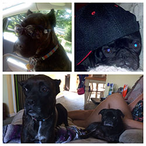

September 2015
Peanut is the youngest of the kitties and the most adorable little girl. She was found abandoned at about 3-4 weeks of age and my daughters and I were her surrogate mothers, teaching her how to eat and go potty. BooBoo is the goofiest little vampire kitty. If you are ever in need of a hug, BooBoo is right there! Louie is the lover and food thief. He was gravely ill about 8 years ago but neither he nor I gave up and it paid off. Moose is the sweetest, biggest boy! As big as he is, he is very lovey and gentle. All rescues. Isabelle is a Cane Corso and just the best little girl. She loves everyone, especially little kids. Emmitt is my piggy in Pug's clothing - always snorting! His nickname is Hams as he is a little ham! Eddie is an English Parakeet with about a 30 word vocabulary. There isn't a day that doesn't go by where Emmitt doesn't hear. "Emmitt, NO!" from Eddie. Eddie is also about 16 years old - way past his life expectancy! Cheese had a rough start in life, but you would never know it as he loves everyone. The vet says he never meows because the beginning of his life was traumatic.
|